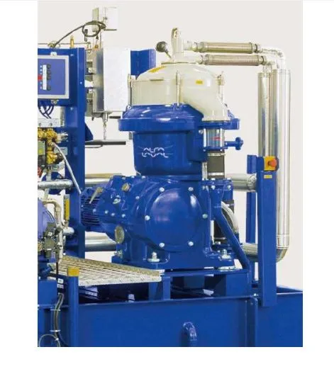

Precision disc bowl technology for continuous automated removal of water and solids from fuel and lubricating oils. Efficient, robust and highly scalable.
The Alfa Laval MOPX series (including the MOPX 205 and 207) set the standard for high-performance self-cleaning centrifuges. Designed for the purification of mineral oils, lubricating oils, and various industrial fluids, these units provide continuous automated discharge of solids, ensuring maximum uptime for your critical processes.
With high bowl speeds generating exceptional G-force, MOPX centrifuges reach separation levels that significantly reduce engine wear and emissions while reclaiming high-value oils for reuse. It's the ultimate choice for marine, power industry, and oil rejuvenation projects.

Self-cleaning bowl design allows for continuous operation by automatically ejecting separated solids at preset intervals.
Powerful enough to separate oil, water and solids simultaneously in a single pass with extreme precision.
Utilizing EPC-41 electronic control units for precise temperature and discharge monitoring and fully automated process cycles.
Proven in the toughest processing environments:
Talk to our separation specialists at Brigantine about automating your oil purification with the MOPX series.